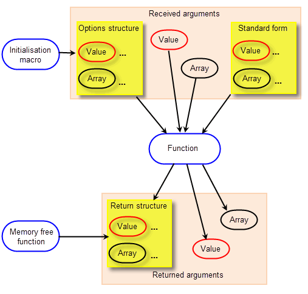

| |
PK Interface Programming Concepts |
| <<< Parasolid Source Code Collateral | Chapters | Tracking And Labelling >>> |
Calling Parasolid functionality from your application code is a simple process. Parasolid has a long history of strong design principles and offers its functionality through a consistent interface that is accompanied by complete and thorough reference documentation.
The PK interface is C-style callable from C/C++. It is presented as a collection of C declarations for tokens, structures and functions that are defined in the file
parasolid_kernel.h
.
A Microsoft .NET binding DLL for Parasolid is also available, which allows Parasolid-based applications to be written in the C# programming language. See Chapter 12, “Calling Parasolid From .NET Code”, for more information on C# binding.
For examples of the use of the PK Interface, see the code examples in the Parasolid Jumpstart Kit\example_applications\C++\Code Examples folder in your Parasolid installation folder.
|
Note: A good working knowledge of the C programming language is required as Parasolid has a C interface. |
All Parasolid interfaces follow strict naming conventions that make them easy to use and identify. All PK functions have names of the form PK_ <CLASS>_ <text>, where <CLASS> is the class of entity on which the function can be called, and <text> is usually a verb/noun combination that describes the operation to be performed.
Every function has a fixed set of arguments. Some of these are used to supply data (received arguments) and some are used to return information (return arguments). Arguments must never be used for both purposes. The overall relationship between these different elements is illustrated in Figure 9-1.
Figure 9-1 Structure of a typical function
See Section 2.3, “PK interface functions” for more information on PK functions and argument types.
In Parasolid, objects of a similar type belong to a class which defines objects of a common type. For example, all cylindrical surfaces are of type PK_CLASS_cyl. Classes are grouped together to form a class hierarchy which is illustrated in Figure 2-1 in Chapter 2, “Parasolid Concepts”.
When the class has an object belonging to it (which it usually does) the name of their C type is of the form PK_< CLASS>_t. These objects may be either:
Objects of some classes have tags which identify them within a Parasolid session. See Section 2.4.2, “Tags” for more information on tags.
A PK class often has other types associated with it, structures of one form or another or token enumerations, and these have names of the form PK_< CLASS>_< text>. When these types are more directly associated with a particular function their names reflect this as there are naming conventions for option structures, type classifications, etc.
Some classes have a special structure type called a standard form that represents the data encapsulated by objects belonging to the class. These structure types have names of the form PK_< CLASS>_sf_t. For example PK_CONE_sf_t is the standard form of a cone. See Section 17.2, “Standard forms” for more information.
For more information on PK classes, see Section 2.2, “Parasolid class structure”.
Optional arguments and switches passed to functions are collected together in a single structure and passed as one argument called an option structure. Every option in the structure must be specified even if you only require the default behaviour. You must do this by calling the relevant macro as described in Section 9.2.2.1, “Using a macro to initialise option structures”.
|
Note: Option structures are named by adding the string “_o_t” to the function name. |
Each option structure must be initialised before use by using a corresponding macro so that all fields in a structure are set to their default values. After initialising with the macro, your application needs to reset the relevant fields in the option structure to a non-default value.The default values set by the macro are, in general, shown in the documentation for each option structure, in brackets after the field name and type. If the option structure contains an array of substructures, these must also be initialised by their macros if they are being supplied.
|
Note: The default options are not recommend settings but are set for stability of legacy behaviour. |
|
Note: Option structure initialiser macros are named by replacing the “_o_t” string at the end of the function name with “_o_m”. |
Warning: Each options structure has an
o_t_version
field, which is initialised by the corresponding options macro, and should not be set directly by your application code. You should not edit this field as it allows Parasolid to detect which version the code was compiled with so later versions can interpret the option structure correctly. For more information, see Section 9.8, “Compatibility between Parasolid versions”. |
Example of calling a PK function using an option structure:
PK_FACE_t face; PK_TOPOL_t topol; PK_VECTOR_t point; PK_FACE_contains_vectors_o_t option; point.coord[0] = 5.0; point.coord[1] = 5.0; point.coord[2] = 0.0; /*Initialise all fields in option structure for PK_FACE_contains_vectors*/ PK_FACE_contains_vectors_o_m(option); /* Specify point */ option.vectors = &point; option.n_vectors = 1; |
Some return arguments declared in the form:
may be set to NULL before the function is called to indicate that this information is not to be returned and no space is to be allocated for it. Such arguments are indicated by the word ‘optional’ as shown in the following example:
PK_ERROR_code_t PK_BODY_ask_faces ( // received arguments PK_BODY_t body, // a body // returned arguments int *const n_faces, // number of faces (>= 0) PK_FACE_t **const faces // faces (optional) ) |
You can call this function with
faces
set to NULL. This use of NULL is only allowed in those cases where it is explicitly documented.
|
Note: Functions which have option structures never have optional return arguments |
Some functions require you to initialise their return structure before use by using a corresponding macro so that all fields in a structure are set to their default values. Only return structures that have an “_r_t_version” field need to be initialised in this way.
|
Note: Return structure initialiser macros are named by replacing the “_r_t” string at the end of the function name with “_r_m”. |
In general, Parasolid receives variables by reference when:
The
const
modifier is used in Parasolid to protect the application’s data from being altered by Parasolid in any unintended way. More specifically, it is used to:
const PK_LINE_sf_t *line_sf
int *const n_edges
When the type of a function argument is declared using
const
, this protection applies within that function and within any it calls to any depth; that is, constancy is propagated downwards. It is not necessary for applications to declare variables using the const modifier to pass them to Parasolid.
The amount of memory required for certain arguments returned from Parasolid functions cannot be determined at build time. For these arguments, memory must be allocated at run-time. Parasolid allocates the required memory using the function you specify in PK_MEMORY_register_callbacks (which may be different from the function you specify more general for Parasolid's memory usage, via PK_SESSION_register_frustrum). For these arguments, you must ensure that memory is freed correctly when it is no longer required. Variable length data is returned from the PK as C arrays which can be split into the following three categories with respect to their memory requirements.
The application declares the space at compile-time and passes a (constant) pointer to it to Parasolid. These arguments appear as, for example,
type name[3]
in the PK function headers. Space declared at compile-time does not need to be explicitly freed.
The application allocates space at run-time and passes a constant pointer to it to Parasolid. These arguments appear as
type name[]
or
type *const name
in the function headers, where
name
is an array whose length is not known at compile-time. The space allocated should be freed by the application some time later when it is no longer required.
The application should declare a pointer to the returned type, and pass a constant pointer to this pointer to Parasolid. Parasolid sets the pointer to point to the returned information. These arguments usually appear as
type **const name
in the function headers; they can also appear as arrays of pointers.
|
Note: Your application is responsible for freeing the memory once it is no longer required. |
The PK_MEMORY functions provide an interface by which the application can handle the allocation and freeing of space for variable length returned arguments from the PK:
Note: Your application must free all memory allocated on its behalf by the PK when returning arguments of the
type **const name
form using PK_MEMORY_free. |
The memory handling functions FMALLO and FMFREE must be provided via a call to PK_SESSION_register_frustrum in order for the Parasolid session to start.The function PK_MEMORY_register_callbacks registers the allocation and freeing functions that Parasolid is to use for variable length PK returns with Parasolid. By default, Parasolid uses the C standard malloc and free runtime library. You should ensure that all registered allocation and freeing functions are compatible and thread-safe. In addition, PK_THREAD_register_memory_cbs can register thread-specific allocation and freeing functions. See Section 114.2, “How to set up and use application threads” for more information.
The functions PK_MEMORY_alloc and PK_MEMORY_free make use of the registered allocation and freeing functions provided for applications that have a layered architecture.
PK_MEMORY_register_callbacks can optionally register PK_MEMORY_free_f_t and PK_MEMORY_alloc_f_t. This type of memory is completely independent of the Parasolid session and is used to allocate return structures, arrays and PK memory blocks. By default, Parasolid uses the C standard malloc and free runtime library. For more information on managing memory, see Section 6.5, “Memory management”.
If a PK function succeeds, the space for any variable length returns can be freed by calling PK_MEMORY_free. If a PK function fails, and has already allocated any space for variable length returns, then Parasolid frees that space by calling the registered free function.
If the function returns a structure that contains a pointer, then the space it is pointing to is allocated by Parasolid and must be freed later by the application. In particular, standard forms are structures of fixed size but they may point to variable length arrays.
As an example, PK_BCURVE_ask returns PK_BCURVE_sf_t which, because it is of fixed size is declared as:
PK_BCURVE_sf_t *const bcurve_sf
The structure PK_BCURVE_sf_t contains the field:
and space for the knot vector is allocated by Parasolid.
Hence the more general rule is that whenever returned information has two levels of indirection, then the space is allocated by Parasolid. In the simple cases, the two levels of indirection are indicated by declarations of the form:
but the two levels may be split where the first is a pointer to a structure and the second is a pointer within the structure.
Some return structures have code supplied to free the space pointed to by the structure. For a return structure whose name is of the form:
|
Note: This code is supplied to assist application developers and is not a core part of the PK interface. |
Parasolid includes a number of PK_DEBUG functions that you can use to obtain additional information when debugging calls to PK functionality. Documentation for these functions is provided in Chapter 102, “Debug Functionality”. For further information, see the PK Interface Programming Reference Manual.
For an example of this functionality, see the code example in the
C++\Code Examples\Application
Support\Archiving\Journal
Debug
Report
Session
folder, located in
example_applications
in your Parasolid installation folder.
|
Note: You should not include calls to any PK_DEBUG functions in a released product. |
When a PK function is deprecated - because it is replaced with an improved version - it remains in Parasolid so that it can continue to be used by legacy code. A list of these deprecated functions can be found in the PK Interface Programming Reference Manual. By default deprecated functions are not listed in that manual, but they can be displayed by selecting ‘Show deprecated functions’ at the top of the contents page of that manual.
Replacement functions can usually be identified by a number at the end of the function name. For example, PK_BODY_boolean_2 replaces the deprecated function PK_BODY_boolean.
|
Note: Once a function is deprecated, you should only use it in existing legacy code. Any new code should use the replacement function. |
The majority of Parasolid functions support facet geometry. A list of some of the APIs along with their level of support for facet geometry is provided in the Functions with limited facet geometry support section of the PK Interface Programming Reference Manual.
In addition, interfaces that do not support facet geometry are marked [NF] in the PK Interface Programming Reference Manual and these need to be left at their default values. Those that offer partial support are marked [PF] and can be changed to values that support facet geometry.
The following are not guaranteed to be consistent between different versions of Parasolid, and may change between releases without notice. Your application code should not rely on either of these:
Parasolid uses a plug-and-play mechanism that allows newer versions of Parasolid to interpret the options structures from older versions. This means that you can use any newer Parasolid build (as a dynamically linked library) at run time, without the need to rebuild your application.
This mechanism is helpful in situations where you need to use a newer Parasolid version, perhaps to access a bug fix, with minimal impact to your application. In general when upgrading your Parasolid version it’s recommended to rebuild your application to access functional enhancements in full.
The plug-and-play mechanism depends on the first field in all options structures,
o_t_version
. Before interpreting the rest of the options structure, Parasolid reads this field to determine the options structure version and thus work correctly with older versions of the options structure.
The following functions are present within Parasolid to support applications with legacy code. We do not recommend the use of these functions and as such, the functions are undocumented.
To obtain the documentation or information regarding these functions, contact Parasolid Support.
The following functions are undocumented and should not be used in application code. They are provided only for backward compatibility...
| <<< Parasolid Source Code Collateral | Chapters | Tracking And Labelling >>> |